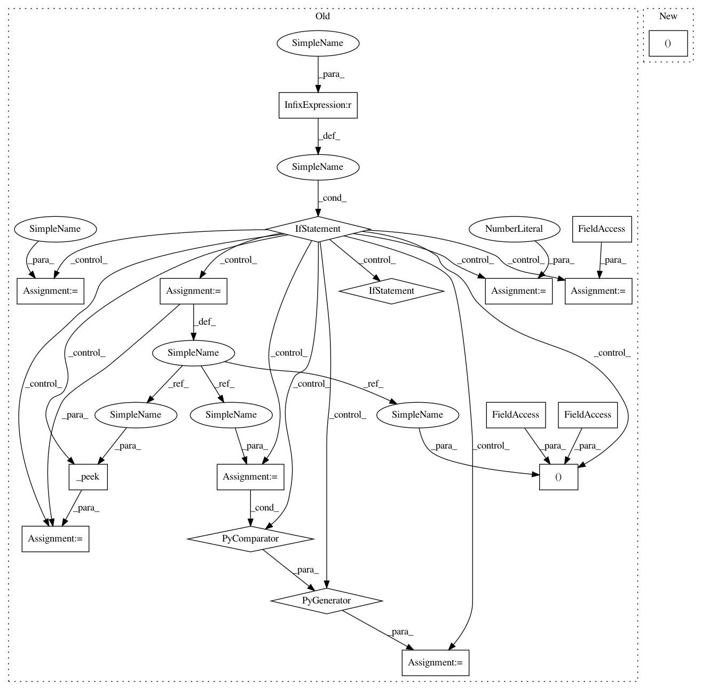

46e35f8597e2a8f161ee6fefe0e23635694c241b,onmt/IO.py,ImageDataset,_process_corpus,#ImageDataset#Any#Any#Any#Any#Any#Any#Any#,617
Before Change
src_examples = _read_img_file(src_path, src_dir, "src")
self.n_src_feats = 0
if tgt_path is not None:
tgt_examples = _read_text_file(tgt_path, tgt_seq_length_trunc,
"tgt")
(_, tgt_feats), tgt_examples = _peek(tgt_examples)
tgt_examples = (ex for ex, nfeats in tgt_examples)
self.n_tgt_feats = tgt_feats
else:
tgt_examples = None
self.n_tgt_feats = 0
if tgt_examples is not None:
examples = (_join_dicts(src, tgt)
for src, tgt in zip(src_examples, tgt_examples))
else:
After Change
src_examples = _read_img_file(src_path, src_dir, "src")
self.n_src_feats = 0
tgt_examples, self.n_tgt_feats = \
_make_example(tgt_path, tgt_seq_length_trunc, "tgt")
if tgt_examples is not None:
In pattern: SUPERPATTERN
Frequency: 3
Non-data size: 18
Instances
Project Name: OpenNMT/OpenNMT-py
Commit Name: 46e35f8597e2a8f161ee6fefe0e23635694c241b
Time: 2017-12-17
Author: nasa4836@gmail.com
File Name: onmt/IO.py
Class Name: ImageDataset
Method Name: _process_corpus
Project Name: OpenNMT/OpenNMT-py
Commit Name: 46e35f8597e2a8f161ee6fefe0e23635694c241b
Time: 2017-12-17
Author: nasa4836@gmail.com
File Name: onmt/IO.py
Class Name: AudioDataset
Method Name: _process_corpus
Project Name: OpenNMT/OpenNMT-py
Commit Name: 46e35f8597e2a8f161ee6fefe0e23635694c241b
Time: 2017-12-17
Author: nasa4836@gmail.com
File Name: onmt/IO.py
Class Name: ImageDataset
Method Name: _process_corpus
Project Name: OpenNMT/OpenNMT-py
Commit Name: 46e35f8597e2a8f161ee6fefe0e23635694c241b
Time: 2017-12-17
Author: nasa4836@gmail.com
File Name: onmt/IO.py
Class Name: TextDataset
Method Name: _process_corpus